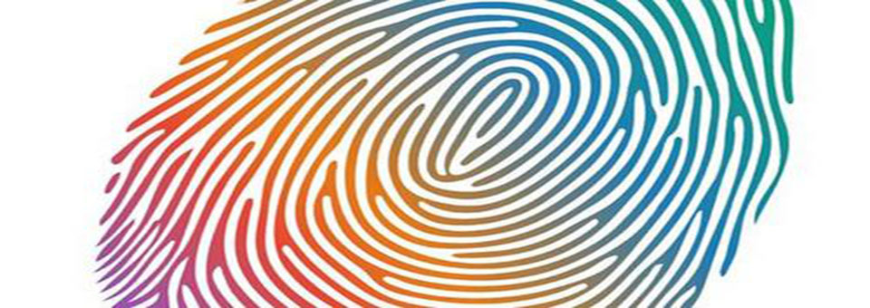
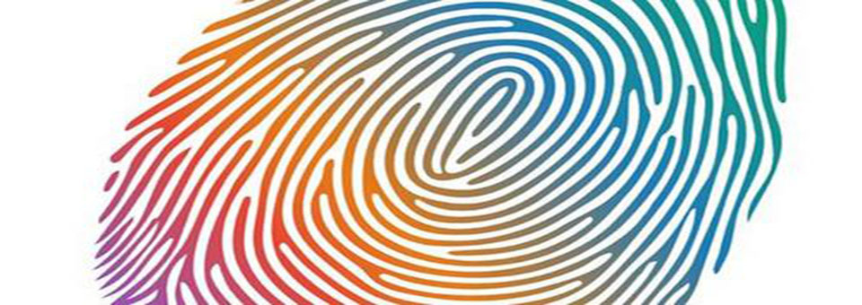

指纹小贴士
指纹，也叫掌印，即是表皮上突起的纹线，由于人的指纹是遗传与环境共同作用的,其与人体健康也密切相关， 因而指纹人人皆有，却各不相同，由于指纹重复率极小，大约150亿分之一，故其称为“人体身份证”。指纹是人类手指末端指腹上由凹凸的皮肤所形成的纹路，指纹能使手在接触物件时增加摩擦力，从而更容易发力及抓紧物件，它是人类进化过程式中自然形成的。 . 伸出手，仔细观察，即可以发现小小的指纹也分好三种类型：有同心圆或螺旋纹线，看上去像水中漩涡的，叫斗形纹；有的纹线是一边开口的，即像簸箕似的，叫箕形纹；有的纹形像弓一样，叫弓线纹。
- 第一类是明显纹，就是目视即可见的纹路。如手沾油漆、血液、墨水等物品转印而成，通常都是印在指纹卡上成为基本资料；
- 第二类是成型纹，这是指在柔软物质，如手接触压印在蜡烛、黏土上发现的指纹；
- 第三类是潜伏指纹，这类指纹是经身体自然分泌物如汗液，转移形成的指纹纹路，目视不易发现，是案发现场中最常见的指纹。虽然肉眼无法看到这些指纹，但是经过特别的方法及使用一些特别的化学试剂加以处理，即能显现出这些潜伏的指纹。
指纹应用
从“指纹”到“指纹术”的研究，经历了漫长的过程。指纹技术形成之后，又经过了从人工识别技术到自动化识别技术的发展转变。随着计算机图像处理技术和信息技术的发展，指纹识别技术逐渐进入IT技术领域，与众多计算机信息系统结合在一起，广泛应用起来。
- 注册匹配
- 识别验证
- 身份管理